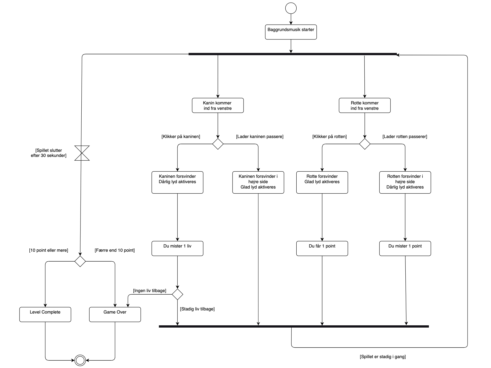

Aktivitetsdiagram
Her ser du mit Aktivitetsdiagram. Aktivitetsdiagrammet er opbygget således at når spillet starter, så aktiveres baggrundsmusikken. Herfter vil der komme rotter og kaniner ud fra venstre side. Alt efter om man klikker eller lader dem passere, kan man miste liv, point eller optjene point. Spillet er vundet når man har 10 point eller mere. Du taber spillet ved at enten miste alle 3 liv, eller få færre end 10 point.
State Machine Diagram
Her ser du mit State Machine Diagram